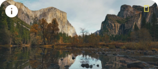

Microinteraction:

America's National Parks
National Geographic takes viewers on an extraordinary venture
across world-famous and lesser-known national parks to reveal
the diversity and wonder of this beautiful country, from the
lush valley floors of Yosemite to the constantly erupting
volcanoes of Hawai'i.
How it Works:
Triggers
- Hover on/off card
- Hover on/off Information button
- Hover on/off watch button
- Hover on/off add button
- Click toggle on
- Click toggle off
Rules
- Hover on card:
- Image zooms in about 1.05x over time
- White gradient outer glow fades in behind image
- White border appears around image
- Circle outline with “i” fades in over time on left corner of image
- Hover off card:
- Circle outline with “i” on left corner of image fades out over time
- Image zooms out about -1.05x over time
- White gradient outer glow behind image disappears
- White border around image disappears
- Hover on Information button:
- Translucent information card fades from 0 to 60% opacity over time
- Hover off Information button:
- Translucent information card fades from 60% to O opacity over time
- Hover on watch button:
- Button becomes yellow with black text
- Hover off watch button:
- Button goes back to original black with white text
- Hover on add button:
- Button becomes yellow with black icon
- Hover off add button:
- Button goes back to original black with white icon
- Click toggle on:
- + turns to a checkmark
- Click toggle off:
- checkmark turns to a +
Feedback
- Hover on card:
- Image zooms in about 1.05x over time
- White gradient outer glow fades in behind image
- White border appears around image
- Circle outline with “i” fades in over time on left corner of image
- Hover off card:
- Circle outline with “i” on left corner of image fades out over time
- Image zooms out about -1.05x over time
- White gradient outer glow behind image disappears
- White border around image disappears
- Hover on Information button:
- Translucent information card fades from 0 to 60% opacity over time
- Hover off Information button:
- Translucent information card fades from 60% to O opacity over time
- Hover on watch button:
- Button becomes yellow with black text
- Hover off watch button:
- Button goes back to original black with white text
- Hover on add button:
- Button becomes yellow with black icon
- Hover off add button:
- Button goes back to original black with white icon
- Click toggle on:
- + turns to a checkmark
- Click toggle off:
- checkmark turns to a +
Loops & Modes
- Modes:
- Information Button
- Information Card
©Image is curtesy of National Geographic, https://www.nationalgeographic.com/tv/